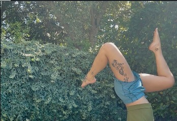
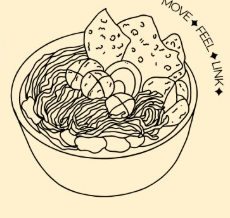
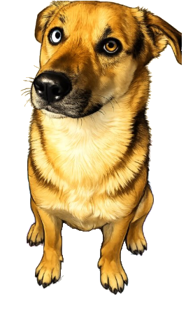
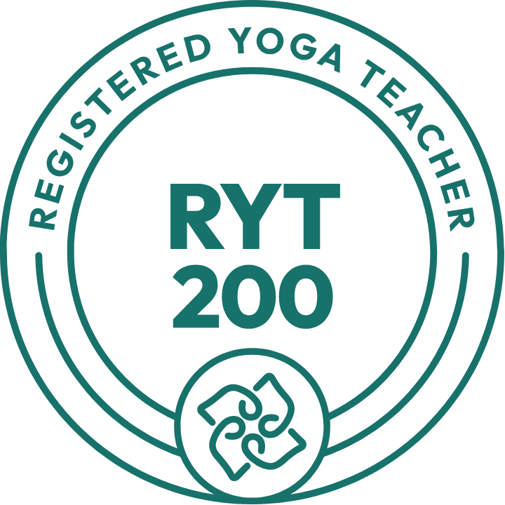

Aventuro Yoga è uno spazio online per praticare con continuità, curiosità e libertà. Classi condivise, un percorso che si adatta a te — non il contrario.


The Salad Experience
Aventuro nasce dal desiderio di creare uno spazio in cui praticare yoga con continuità, curiosità e libertà. Le classi sono condivise, ma il percorso non deve essere identico per ogni corpo, ogni esperienza o ogni obiettivo.
1 pacchetto = 1 mese. Le lezioni sono registrate e restano disponibili per almeno un mese: puoi praticare quando riesci e recuperare senza ansia. Ogni pratica viene proposta per due settimane consecutive — la ripetizione ti aiuta a conoscerla meglio, prima di passare oltre.
La tua pratica non deve adattarsi al calendario. Possiamo imparare a farla entrare nella tua vita.
Ogni settimana hai uno spazio individuale con me: per raccontarmi come sta andando la pratica, chiedere un chiarimento, approfondire una postura o capire quale direzione prendere.
Fino a 5 messaggi a settimana. Per una domanda, un dubbio, un feedback sulla pratica o un breve confronto.
Massimo 15 minuti a settimana. Un piccolo incontro 1:1 per fermarsi, osservare e orientare la pratica.
L'obiettivo non è avere sempre qualcosa da chiedere. È sapere che, quando ne hai bisogno, c'è uno spazio in cui poterlo fare.
La classe è una. Le varianti no. Durante il percorso troveremo opzioni adeguate al tuo livello e ai tuoi obiettivi.
Foundations, familiarità con il corpo, respirazione e basi del movimento.
Varianti, preparazioni e indicazioni per capire meglio una postura.
Drills e progressioni per chi vuole esplorare il mondo upside down.
Un lavoro adattato al tuo punto di partenza e a ciò che vuoi sviluppare.
Il calendario è una traccia, non una gabbia. Partiamo da qui e lasciamo che la pratica evolva insieme al gruppo.
Le basi: costruire una pratica consapevole, stabile e accessibile.
Apertura delle anche in rotazione esterna: stile figure-4 e Upavistha Konasana.
Le torsioni come focus: mobilità della colonna e respiro dentro la rotazione.
Split work e backbends: anche che si aprono in linea, aperture più squadrate verso il petto.
Una pratica che integra tutto il percorso fatto fino a qui, dalle basi alle aperture.
Drills e progressioni per chi vuole esplorare il mondo upside down.
La pratica può essere intensa, giocosa, lenta, forte o quieta. Non cerchiamo di arrivare tutti nello stesso punto: cerchiamo di imparare a stare meglio nel nostro punto di partenza.
Non pratichiamo per diventare perfetti. Pratichiamo per diventare più presenti, più capaci di ascoltare e più liberi di scegliere.
Non forzare. Non ferire. Nemmeno te stessa/o.
Non prendere ciò che non ci appartiene: spazio, energia, tempo, meriti o cose.
Osservare ciò che c'è senza trasformarlo subito in un giudizio su di noi o sugli altri.
Muoversi senza imposizioni, esplorando il corpo nel rispetto di sé e del prossimo.
Non c'è separazione: come stiamo con noi stessi entra nel modo in cui stiamo con gli altri.
Praticare yoga online è diverso dal praticare nella stessa stanza. Ha tantissimi vantaggi, ma richiede anche un po' di flessibilità: se la connessione dovesse cadere, non viverlo come un ostacolo. Continua a respirare, continua a muoverti — la guida più importante è già dentro di te.
Un piccolo invito riguarda il momento prima e dopo la pratica: se puoi, parla con un tono di voce morbido e pacato — è un modo per prenderci cura dello spazio che creiamo insieme. Se in quel momento non è possibile, va benissimo così: anche il silenzio può essere una forma di presenza.
Grazie per scegliere di condividere questo spazio con me. Che possa essere un luogo in cui sentirti libero di respirare, ascoltarti e semplicemente essere.
Non devi sapere oggi quanto riuscirai a praticare. L'idea è darti uno spazio che possa stare dentro la tua vita, non aggiungere un altro obbligo.
Dopo il pagamento su PayPal scrivimi su WhatsApp con il tuo nome: ti aggiungo subito al gruppo e ti mando i dettagli per iniziare.
Sono Mariateresa (Tere), insegnante di yoga certificata RYT 200 (Yoga Alliance). Aventuro Yoga Studio è nato dal desiderio di portare la pratica dentro la vita reale delle persone — tra Veneto e Puglia, e ora anche online, per chiunque voglia praticare con continuità senza stravolgere la propria settimana.

Usa le frecce della tastiera (o i tasti qui sotto su mobile) per muovere Tuco fino alla ciotola di insalata.
Clicca sull'area di gioco per iniziare, poi usa le frecce.